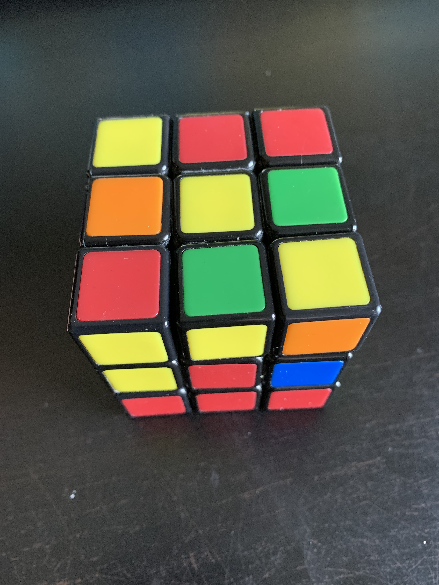

Alles in het blauw is een beweging van de kubus, zie "Algoritmes"
Stap 1: Zet het bovenste vlak goed
Wanneer de eerste laag gedaan is kan je hiermee beginnen,
begin met het gele vlak naar boven te houden. Zoek naar
een middelstuk waar geen vlak geel is,
draai het bovenste vlak horizontaal(U of U') totdat het
bovenste kleur aan de andere kant zit van het middelstuk
van dezelfde kleur.
Stap 2: Maak de tweede laag
Kijk naar de andere kleur die het blokje heeft,
zoek nu naar het midden met deze kleur en hou dit voor
jezelf.
Als het blokje links is: Righty Alg → draai kubus
klokwijs in je hand → Lefty Alg
Als het blokje rechts is:Lefty Alg → draai kubus
anti-klokwijs in je hand → Righty Alg
Herhaal nu de eerste en tweede stap todat de hele
tweede laag compleet is (je gaat dit in totaal 4
keer moeten herhalen) hierna is de hele tweede laag
compleet. Voor vergelijking zie foto . →